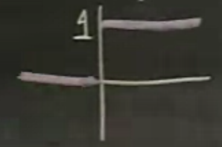
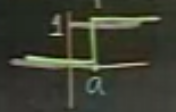
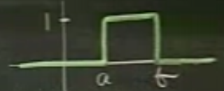
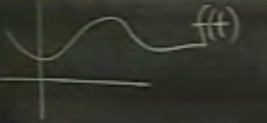
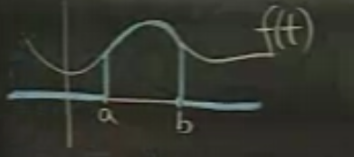
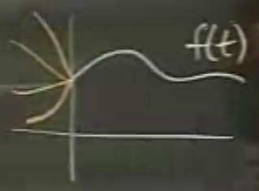
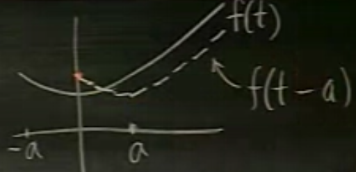
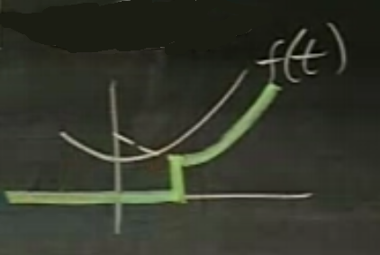
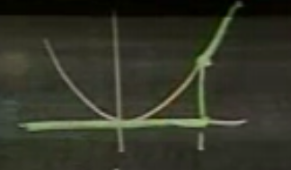
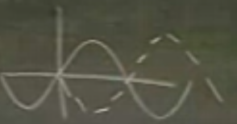

Ders 22
Mühendislerin Laplace Transformunu sevmesinin sebeplerinden biri fonksiyonlarda kesintili / birdenbire zıplayan geçişleri (jump discontinuities) durumlarında bozulmadan işleyebiliyor olmasıdır.
Kesintili fonksiyonlardan biri birim adım fonksiyonudur. Fonksiyonun kendisi tartışma yaratan bir fonksiyon aslında, sıfır noktasında hangi değere sahip olduğu hala kararlaştırılamadı. Bazıları 0 diyor, bazıları 1 diyor, ben bu derste tanımsız bırakacağım. Yani

$u(t)$ birim adım
$u(0)$ tanımsız
Bazen sıfır yerine başka bir noktada zıplama olmasını isteyebilirim. O zaman fonksiyonu kaydırmak mümkün, mesela $a$ kadar.

$$ u_a(t) = u(t-a) $$
Birim Kutu

Kutuyu birim adımlar kullanarak temsil edebilirsek iyi olur, çünkü birim adımların Laplace transformunu biliyoruz.
$$ u_{ab} := u_a(t) - u_b(t) $$
$$ = u(t-a) - u(t-b) $$
Mantıklı gözüküyor, $b$'ye gelene kadar birim adım gibi gidiyoruz, $b$'de birim adımı iptal edecek şekilde birim adımı çıkartıyoruz.
Peki bu fonksiyonlar niye faydalı? Diğer fonksiyonları çarptıklarında o fonksiyonları faydalı şekillerde değiştirebildikleri için. Diyelim ki şöyle bir $f(t)$ var.

$$ u_{ab}f(t) $$
neye benzerdi? Eğer $a,b$ arasında $u_{ab}$ 1 değerine eşitse, çarpım bu aralıkta $f(t)$'yi olduğu gibi alır. Diğer noktalarda sıfır yapar. Alttaki şekil ortaya çıkar (mavi çizgiler).

$f(t)$'nin bir parçasını çekip çıkartıyoruz yani. Bu çok ise yarayan bir numara / teknik.
Birim adımın Laplace Transformunu alalım.
$$ \mathcal{L}(u(t)) = \int_{0}^{\infty} e^{-st} u(t) \mathrm{d} t $$
Entegral alt sınırı 0'dan başlıyor. Birim adım 0'dan büyükse hep 1, o zaman üstte $u(t)$'yi 1 alabiliriz. Yani üstteki aslında 1'in Laplace Transformudur.
$$ = \frac{1}{s} \ \ \ s>0 \qquad (1) $$
Kaydırılmış birim adımın Laplace'i
$$ \mathcal{L} (u(t-a)) = \int_{a}^{\infty} 1 \cdot e^{-st} \mathrm{d} t $$
Alt sınır $a$ oldu çünkü $a$'dan önce sıfır, sonrası 1. Bizi tek ilgilendiren kısım fonksiyon 1 olduktan sonra, o zaman alt sınırı değiştiririz.
$$ = \frac{e^{-st}}{-s} \bigg|_{a}^{\infty} = \frac{e^{-as}}{s} $$
Diğer bir özellik
$$ \mathcal{L}(e^{ct}f(t)) = F(s-c) $$
İspat: Eğer entegral temsilini açarsak
$$ = \int_{0}^{\infty} e^{ct}f(t)e^{-st} \mathrm{d} t = \int e^{(c-s)t} f(t) \mathrm{d} t $$
Bu son ifadeye başka bir yönden erişebilir miyiz? Mesela $F(s-c)$ nedir? $s$ yerine $s-c$ koyarsak (temel formülden türetelim)
$$ F(s-c) = \int_{0}^{\infty} f(t) e^{-(s-c)t} ft $$
$$ = \int_{0}^{\infty} e^{(-s+c)t} \mathrm{d} t = \int_{0}^{\infty} e^{(c-s)t} \mathrm{d} t $$
Aynı ifadeye eriştik.
(1) formülünde de ters yönde gidersek
$$ \mathcal{L}^{-1}(\frac{1}{s}) = ? $$
Geriye giderken 1'e mi, birim adıma mı döneceğim? Şimdiye kadar geriye giderken hep 1 seçtim. Artık bu yeterli değil. Problem nerede? Çünkü Laplace Transformu entegral alt sınırı 0'dan başlıyor, yani transform 0 öncesine bakmıyor bile. Bir fonksiyon $f(t)$ 0'dan önce envai türde değere sahip olabilir, Laplace Transformu aynı olacaktır.

Eğer hangi tür problem ile uğraştığımızı biliyorsak bu durum bir sorun çıkarmaz. Mühendisler şöyle kategorize ederler; eğer bir problem şimdiki zamandan, $t=0$, başlayıp ileri gidiyorsa o bir Laplace Transform problemidir, eğer geçmiş zaman verisi gerekiyorsa o bir Fourier Transform problemidir.
Eğer 1 noktasından ( $t=0$ ) geriye giderken ortaya çıkan tanımsızlıktan (ambiguity) kurtulmak istiyorsak, ters Laplace'dan elde edilen fonksiyonu birim adım ile çarparız, böylece $t=0$ öncesi sıfır olmasını garanti etmiş oluruz.
$$ f(t) \leadsto F(s) $$
$$ \mathcal{L}^{-1}(F(s)) = u(t)f(t) $$
Böylece ters Laplace özgün (unique) hale gelir.
Taşıma (translation) ve Laplace
$\mathcal{L}(f(t-a))$'yi $\mathcal{L}(f(t))$ temel alarak yazabilir miyiz? Bu ne yazik ki mumkun degil.

Üstte $f(t)$'yi $a$ kadar sağa kaydırdık. Kesik çizgili yeni, taşınmış fonksiyonu niye düz çizgili fonksiyon bağlamında temsil edemiyorum? Sebep bariz, çünkü $f(t)$'nin sıfır öncesi değeri. O değer Laplace Transformu sırasında kullanılmaz, ama taşındıktan sonra yeni fonksiyonda kullanılır. Aradaki bu uyuşmazlığı, eksikliği kapatmak mümkün değildir.
Yapabileceğimiz en iyi şey, kaybettiğimiz bölümü $u(t-a)f(t-a)$ kullanımıyla Laplace Transformundan silmektir. Altta köyü çizgili olan kısmın transformunu alırız yani.

$$ u(t-a)f(t-a) \leadsto e^{-as}F(s) \qquad (2) $$
(2) geçişi Laplace Tablosunda görülebilir.
Fakat $f$ çoğunlukla $t-a$ formunda gelmez, mesela $\sin(t)$, $\cos(t)$ olur, o zaman şu teknik kullanılabilir,
$$ u(t-a)f(t) \leadsto e^{-as}\mathcal{L}(f(t+a)) $$
Bu tekniğe bazıları üstel kaydırma fonksiyonu (exponential shift formula) diyor. Biz bu terimi kullanmayacağız. Biz $t$ ekseni taşınması (t-axis translation) formülü diyeceğiz.
(2)'nin ispatı
$$ \int_{0}^{\infty}e^{-st}u(t-a)f(t-a) \mathrm{d} t $$
Ama formülde $F(s)$ kullanmak istiyorum, o zaman $f(t-a)$'yi bir şekilde $f(t)$ yapmam lazım. Değişken değişimi yaparım.
$$ t_1 = t-a $$
$$ = \int_{a}^{\infty}e^{-s(t_1+a)}u(t_1)f(t_1) \mathrm{d} t_1 $$
$$ = e^{-sa} \int_{-a}^{\infty}e^{-st_1}u(t_1)f(t_1) \mathrm{d} t_1 $$
$u(t_1)$ $t_1<0$ için sıfır olduğuna göre $-a,0$ arasını entegral alt sınırından atabiliriz,
$$ = e^{-sa} \int_{0}^{\infty}e^{-st_1}f(t_1) \mathrm{d} t_1 $$
$u(t_1)$'in kendisini niye attık? Çünkü sıfır sonrası 1 değerinde zaten.
"Ama $t$ değişkeni $t_1$ haline geldi, artık bu Laplace Transformu olmaz" diye düşünenler olabilir. Fakat entegrasyonda kullanılan fonksiyonun illa $t$ ismini taşıması gerekmiyor, çünkü o değişken bir yer tutucu (dummy) sadece. Entegre edilen, sınırlar düzgünse, üstteki de bir Laplace Transformudur.
Yani
$$ u(t-a)f(t-a) \leadsto e^{-as}\mathcal{L}(f(t)) $$
$t$ yerine $t+a$ geçirdim.
Eğer $u(t-a)f(t)$ olsaydı?
$$ u(t-a)f(t-a+a) \leadsto e^{-as}\mathcal{L}(f(t+a))) $$
Örnek
$$ u_{ab} = u(t-a) - u(t-b) $$
$$ \leadsto \frac{e^{-as}}{s} - \frac{e^{-bs}}{s} $$
Örnek
$$ u(t-1)t^2 $$
Transformu nedir?
$$ \leadsto e^{-s}\mathcal{L}((t+1)^2) = e^{-s}\mathcal{L} (t^2+2t+1) = e^{-s}(\frac{2}{s^3} + \frac{2}{s^2} + \frac{1}{s}) $$
Bayağı kalabalık bir sonuç oldu, fakat transformunu aldığımızda elde edilen yukarıdaki fonksiyon da o kadar basit bir fonksiyon değil zaten; altta yeşil renkle işaretli

Fonksiyon kesintili (discontinuous) bir fonksiyon. Kesintinin nerede oluştuğu $e^{-as}$ formülünde $a$, yani $e^{-s} = e^{-1\cdot s}$ için 1.
$$ \mathcal{L}^{-1}\bigg( \frac{1+e^{-\pi s}}{s^2+1} \bigg) $$
Cevabın bir kesikli fonksiyon olacağını şimdiden biliyoruz, çünkü formül içinde üstel bir fonksiyon var. İlk yapacağımız iş üstel fonksiyonu yanlız kalacak şekilde ifadeyi parçalamak.
$$ = \frac{1}{s^2+1} + \frac{e^{-\pi s}}{s^2 + 1}$$
Önce suna bakalım
$$ \frac{1}{s^2+1} \stackrel{-1}{\leadsto} \ \ ? $$
Eğer üsttekine cevap olarak $\sin(t)$ dersek, yanlış olur. Eğer üstel fonksiyon formülün geri kalanında olmasaydı, o zaman $\sin(t)$ olabilirdi, ama şimdi
$$ \frac{1}{s^2+1} \stackrel{-1}{\leadsto} u(t)\sin(t) $$
kullanmamız lazım. Peki
$$ \frac{e^{-\pi s}}{s^2 + 1} \stackrel{-1}{\leadsto} \ \ ? $$
Yine (2)'yi kullanırım,
$$\stackrel{-1}{\leadsto} u(t-\pi)sin(t-\pi) $$
Nihai cevap nedir? İki parçayı toplarım
$$ \frac{1}{s^2+1} + \frac{e^{-\pi s}}{s^2 + 1} \stackrel{-1}{\leadsto} u(t)\sin(t) + u(t-\pi)\sin(t-\pi) $$
Bu cevap teknik olarak doğru, ama biraz masajlayıp onu daha düzgün bir hale getirmek lazım [hatta hoca şakayla karışık bu halde bırakırsanız sınavda not kırarım diyor].
O zaman her parçaya teker teker bakalım. Formülün $u(t)\sin(t)$ kısmı sadece $t \ge 0$ için anlamlı, çünkü ondan önce birim step fonksiyonu sıfır. $u(t-\pi)\sin(t-\pi) $ kısmi ise $t \ge \pi$ için anlamlı. Elimizde iki tane senaryo var aslında, o zaman bu fonksiyonu parçalı, senaryolu olarak gösterebiliriz.
$$ f(t) = \left\{ \begin{array}{ll} sin(t) & 0 \le t \le \pi \\ sin(t) + (-sin(t)) & t \ge \pi \end{array} \right. $$
Terim $-\sin(t)$, $\sin(t-\pi)$'dan geldi, çünkü $\sin$'i $\pi$ kadar yana kaydırırsak (altta kesik çizgili)

elde edilen $-\sin(t)$'dir. Nihai formül
$$ f(t) = \left\{ \begin{array}{ll} sin(t) & 0 \le t \le \pi \\ 0 & t \ge \pi \end{array} \right. $$